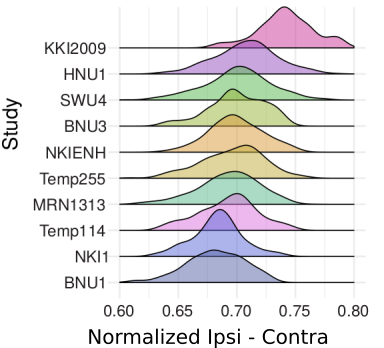

NDMG
A One-Click Pipeline for Cloud Connectomics
Created by Eric Bridgeford
Follow the slides: ericwb.me/lectures/ohbm/ohbm_ndmg.html
Opportunity
Multimodal MRI Imaging is Becoming Commonplace
- Multimodal MRI (M3R): a dataset containing MRI images from multiple modalities
- Open-access datasets are expansive (CoRR, HBN, HCP)
- No clinical relevance for dMRI and fMRI
Challenge
Connectomics is difficult
- computationally intensive
- hard to identify a "good" pipeline
- what desiderata do we want?
A Principled Approach for Connectomics

Action
NDMG Combines Best Practices of dMRI and fMRI Connectomics

NDMG Scales in the Cloud

Thousands of Scans Processed and Available

NDMG offers hypotheses for M3R connectome inference

NDMG identifies consistent biomarkers for M3R connectomes

Cross-Site Batch Effects are Prevalent and Prominent
Downstream Impact
NDMG: A Pipeline for Efficient Connectomics
- development of open-source reference pipeline: ndmg
- pipeline is hyper-parallelizable with AWS: ~1 hour per M3R, all running in parallel
- Compliant with best-practices of community to make generalizability trivial
- Docker, singularity, and AMI for ease of deployment across site
NDMG expands the open-source neuroscience community
- ndmg codebase is open-source on github
- thousands of connectomes available online at neurodata.io
- extensive QA suite produced with each connectome
Meganalysis Demonstrates Troublesome Cross-Site Generalizability
- Many neuroscientific approaches suffer from small or limited sampling
- simple meganalysis study highlights need to emphasize cross-site replicability
Links
Questions?
Created by Eric Bridgeford Special Thanks: Josh Vogelstein, Greg Kiar, Brian Caffo, Carey Priebe, Cameron Craddock, Michael Milham, Randal Burns, Xi-Nian Zuo, Vince Calhoun, Sephira Ryman, Rex Jung, Daniel Marguiles, Vikram Chandrashekhar, Disa Mehembere, Will Roncal Acknowledgements: DARPA {XDATA, SIMPLEX, GRAPHS}; NSF; NIH; Kavli